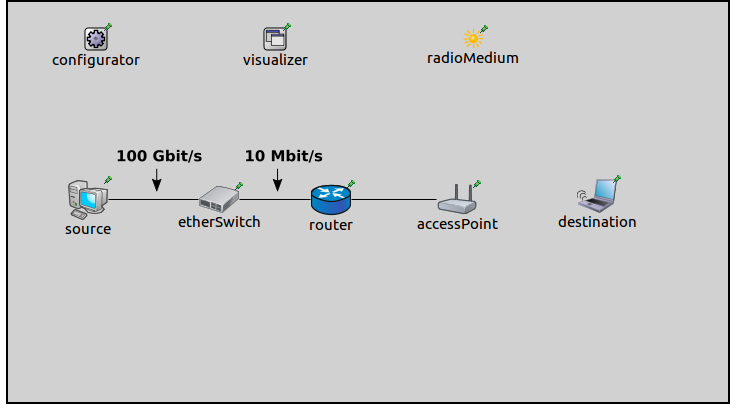
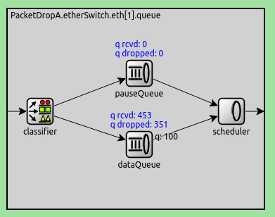

Dropped packets are a sign of network congestion, or a connection problem. Visualizing dropped packets can help identify problems with simulation models. There is no need...to check the logs to see that there are lost packets. Thats good because its hard. This is very convenient It shows that there are packets that dont make it to the destination. Visualizing packet loss? Should that be a better title?
Data flow in the network might not work as planned, with less throughput than what was estimated. The cause could be that packets are getting dropped somewhere in the network. Visualizing dropped packets can help identify problems in simulation models, like network bottlenecks and connection issues. It makes this convenient, because one doesn't have to analyze the logs to see what happened with the packets. The visualization gives information about where packets are getting lost. This example contains four simulation models, each demonstrating a typical cause of dropped packets.
The PacketDropVisualizer module can indicate dropped packets by displaying an animation at the node, where the packet drop happens. In the animation, a packet icon gets thrown out from the node icon, and fades away. The visualization of packet drops can be enabled with the visualizer's displayPacketDrops parameter. By default, all dropped packets at all nodes are visualized. This selection can be narrowed with the nodeFilter, interfaceFilter and packetFilter parameters.
This configuration uses this network:
It contains a StandardHost, an EtherSwitch, a Router, an AccessPoint, and a WirelessHost. Additionally, there is an IPv4NetworkConfigurator, an Ieee80211ScalarRadioMedium, and a IntegratedVisualizer module.
The source is configured to send a stream of UDP packets to destination. The packet stream starts at two seconds, after destination got associated with the access point. The cause of packet drop in this case is that the queue in etherSwitch fills up. The source is connected to the etherSwitch via a high speed, 100 Gbit/s ethernet cable, while the etherSwitch and the router is connected with a low speed, 10 MBit/s cable. This creates a bottleneck in the network, between the switch and the router. The source host is configured to generate more UDP traffic than the 10Mbit/s channel can put through.
The packets should be dropped at the switch. The queue type in the switch's ethernet interfaces are set to be DropTailQueue, which a default length of 100 (the default, internal queue type has infinite length, which wouldn't drop packets). TODO: is the correct?
The visualization is activated with the displayPacketDrops parameter. The fade out time is set to 3 seconds, so the packet drop animation is more visible:
*.visualizer.*.packetDropVisualizer.displayPacketDrops = true *.visualizer.*.packetDropVisualizer.fadeOutTime = 3s
TODO: IDEA: the switch should be connected with a 100M cable so the AP becomes the bottleneck
TODO: an animation of what happens. explanation. maybe a screenshot of the dropped packets at the queue.
When the simulation is run, at around 2 seconds the UDP stream starts, and packets start accumulating in the queue of the switch. When the queue fills up, the switch starts dropping packets. This is illustrated in this animation:
Here is the queue in the switch's eth1 interface, showing the number of dropped packets:
This configuration uses the following network:

It contains two AdhocHosts, an IPv4NetworkConfigurator, an Ieee80211ScalarRadioMedium, and an IntegratedVisualizer module. The hosts' communication ranges are set up so they are out of range of each other. The source host is configured to ping the destination host. The reason for dropped packets in this case is that the hosts are not in range, thus they can't reach each other. The source transmits the ping packets, but it doesn't receive any replies. The source's Mac module drops the packets after the retry limit has been reached.
This is illustrated in the following animation:
TODO: redo animation without the TODO
This configuration uses this network:

It contains two StandardHosts, connected with an ethernet cable. The ethernet cable is disabled. It also contains an IPv4NetworkConfigurator and an IntegratedVisualizer module. Additionally, host1 is configured to ping host2.
Since the cable between the hosts is disabled, the Mac module is not able to route the packets, and drops them. This is illustrated on the following animation:
Because there is no connection between the nodes, all packets are dropped.